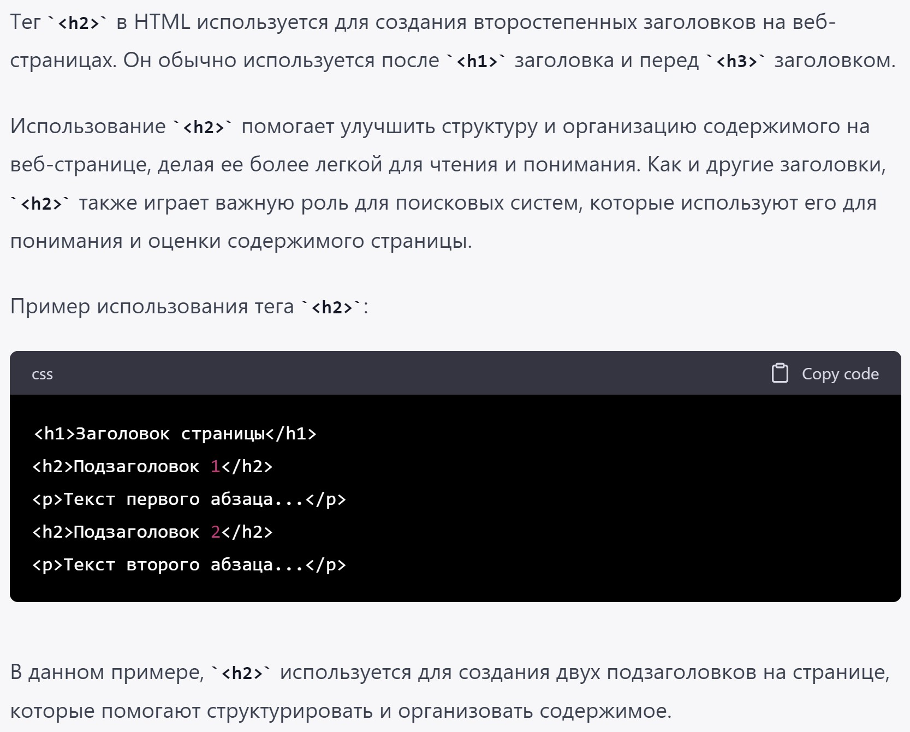

ДЗ про заголовки, ссылки, якоря, iframe
Заголовок первого уровня
Тег ‹h1› используется для создания заголовков на веб-страницах, а тег
‹p› используется для создания абзацев текста. Использование ‹h1› вместо
‹p› имеет существенное значение, поскольку это помогает улучшить структуру и семантику
веб-страницы.
Во-первых, использование ‹h1› в качестве заголовка помогает читателю быстрее понять, о чем
идет речь на странице, и определить ее тему. Кроме того, поисковые системы используют заголовки для
оценки содержимого страницы и ее релевантности для определенных запросов.
Во-вторых, использование правильных тегов помогает обеспечить доступность веб-страницы для пользователей
с ограниченными возможностями. Экранные читатели и другие инструменты помощи для людей с ограниченными
возможностями используют информацию об элементах страницы, чтобы помочь пользователям быстрее и точнее
понимать ее содержание.
В целом, использование ‹h1› вместо ‹p› в HTML является важным шагом для
создания хорошо организованных, информативных и доступных веб-страниц.
Заголовок второго уровня
